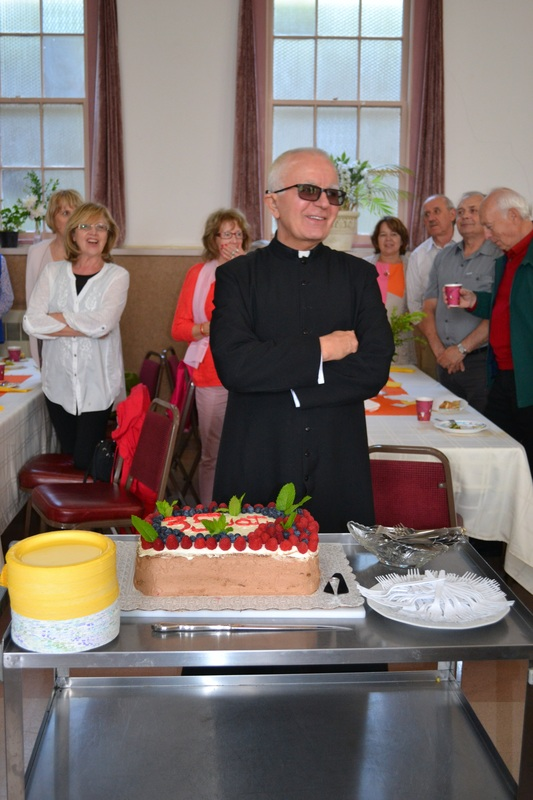

Msze Święte W Niedziele
Sobota:
5:00 PM (j.angielski)
Niedziela:
8:00 AM (j. angielski), 9:45 AM (j. polski), 12:00 PM (j. polski)
Msze Święte W Dni Powszednie
Wtorek: 8:00 AM (j. angielski)
Środa: 7:30 PM (j. polski)
Czwartek: 8:00 AM (j. angielski)
Piątek: 7:30 PM (j. polski)
Sobota: 10:00 AM (j. polski)
Sakrament Pokuty I Pojednania
30 minut przed każdą Mszą Świętą.
Soboty: 4:00-5:00 PM
Pierwsze piątki miesiąca: 8:00-10:00 PM.
Adoracja Najświętszego Sakramentu
Piątek: 6:30-7:30 PM (z wyjątkiem I piątku miesiąca)
W I piątek miesiąca po Mszy Świętej oraz nabożeństwie ku czci Najświętszego Serca Pana Jezusa ma miejsce Adoracja Najświętszego Sakramentu do godz. 10:00 PM.
Nasz Kościoł
Kościoł Świętej Małgorzaty Szkockiej to jest Kościoł Rzymsko-Katolicki, z wspólnotą Polską ale też mniejszością Angielską. Kościół oryginalnie był powstany przez Ojców redemptorystów w roku 1910, i dziszaj nadal jest jeden z najmniejszych i najstarszych Kościołow w Seattle. Dżiś prowadzi Kościół Prb. Andrzej, i ponieważ Kościół przeszedł przez remont, może brać więcej parafian niż oryginalnie. Kościół ma Organy, ktore są grane, przez Organistkę Panią Ewę Rabcę, i też ma salę parafialnią z sceną w których można organizować występy świąteczne. Jest Rownież Kuchnia industrialna, i też nowe zaremontowane łazienki (2023).

Ksiądz Andrzej Galant